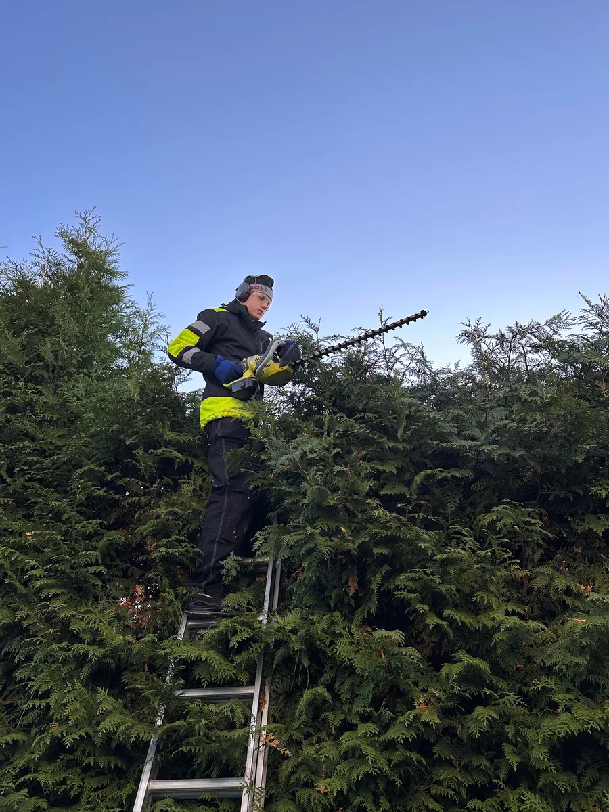
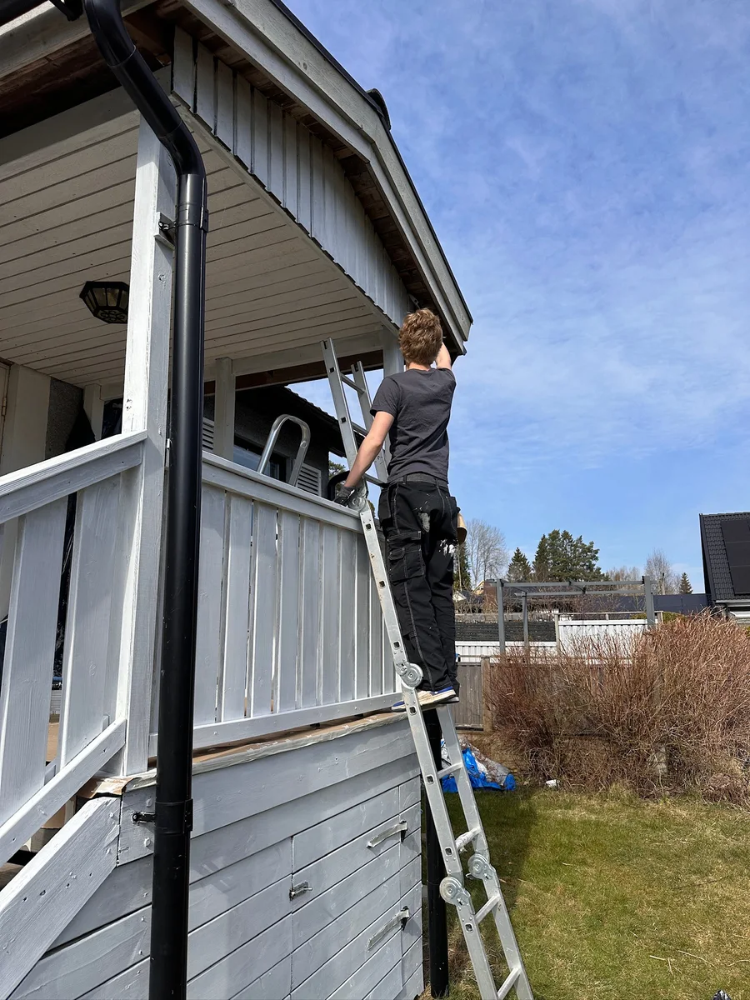
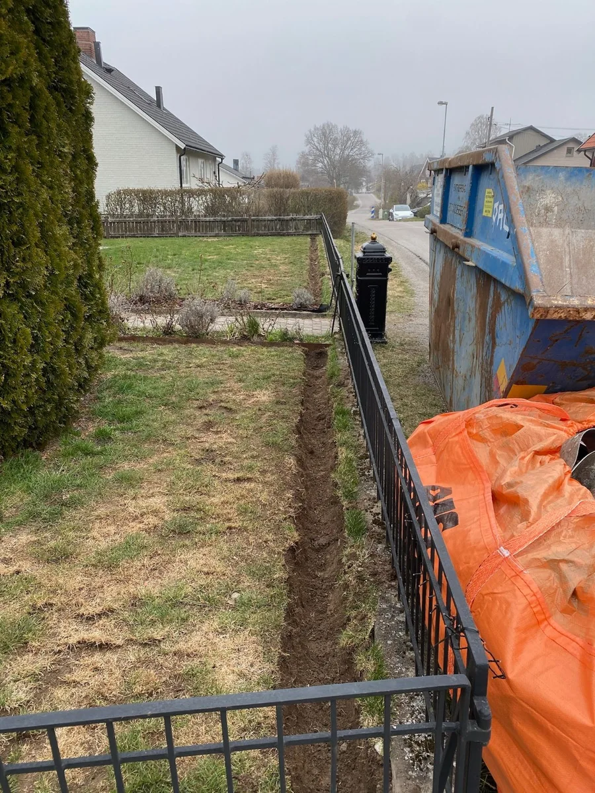
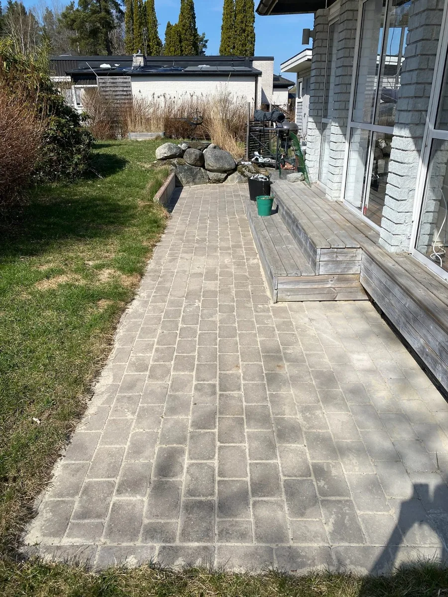
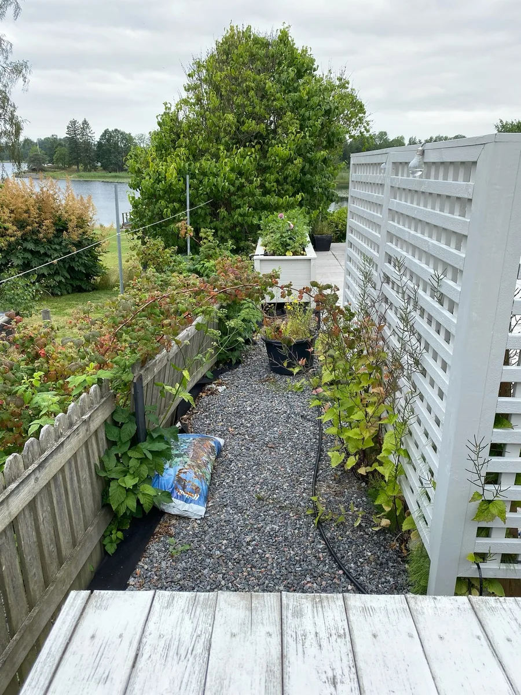
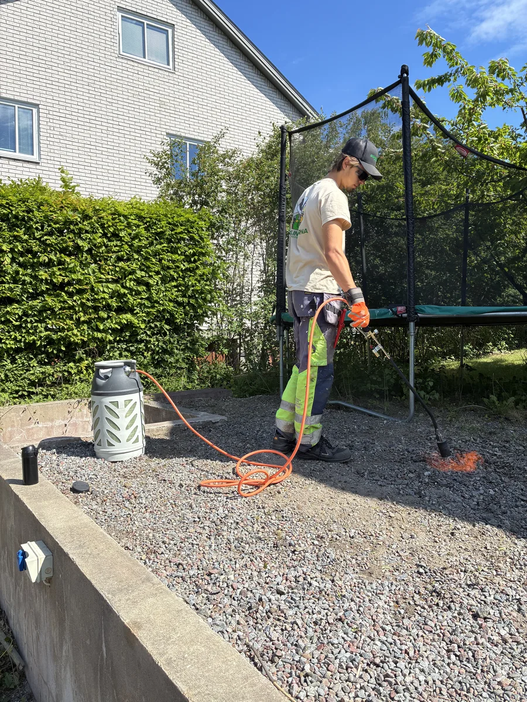
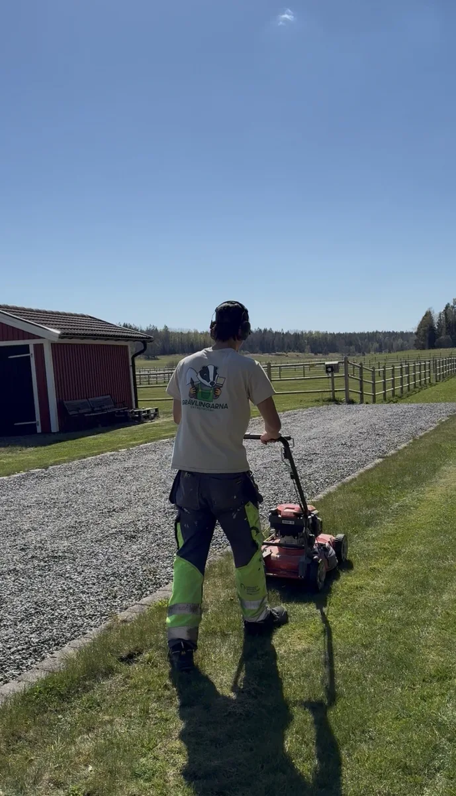

Häckklippning
Häckklippning
Vi klipper häckar i alla höjder och längder. Ris kan forslas bort.
Måleri, grävning, häckar, röjning. Det mesta vi tagit oss an finns här.

Här är ett urval av det vi gjort. Fler bilder kommer löpande.

Vi klipper häckar i alla höjder och längder. Ris kan forslas bort.

Skrapning, grundning och målning av fasader, verandor och staket.

Skrapat, grundat och färdigt. Vi tar hand om hela jobbet från start till slut.

Schaktning för häckar och planteringar. Rätt djup och bredd från start.

Grundlig rensning av gångar, rabatter och uppfarter. Inte bara det som syns ovanifrån.

Markduk läggs under grus eller bark för att hålla ogräset borta länge.

Slyröjning och röjning av buskage, trädgårdar och tomter. Vi tar hand om allt ris.

Effektiv bränning av ogräs på gångar, uppfarter och mellan plattor.

Regelbunden eller engångsklippning. Vi lämnar en välskött och fin gräsmatta.
Berätta vad du behöver hjälp med så svarar vi inom ett dygn med ett prisförslag.
Begär offert